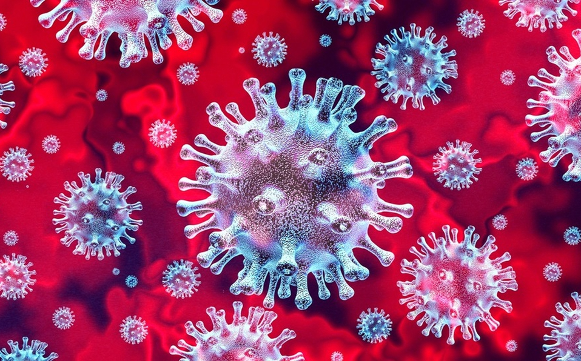

As one political organizer put it, no one`s ever run a campaign completely online before. The big town hall events, the speeches in front of cheering crowds, these have been put on hold to keep people from gathering in large groups. So this is turning into a very different looking election year than America has ever seen. The once numerous field of presidential candidates has been whittled down.